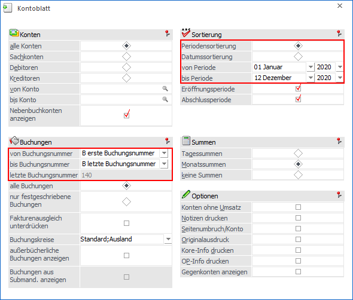
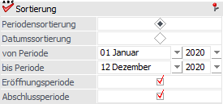
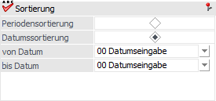

Ø Buchungen von / bis
Die Buchungsnummernfelder sind Auswahlboxen mit folgenden Eingabemöglichkeiten:
ü A - Eingabe
Bei der Bestätigung
dieses Eintrages wird die Auswahlbox wieder zu einem Nummernfeld. Falls man
wieder zurück auf die Auswahlbox wechseln möchte, muss im Feld der Eintrag "N"
verwendet werden.
ü B - erste / letzte
Buchungsnummer
Falls dieser Eintrag gewählt wurde wird bei der Vorschau des
Reports bzw. beim erzeugen des Reports die Buchungsnummer entsprechend
belegt.
Ø Periode

In der Auswahlbox der Perioden gibt es zusätzlich den Eintrag "99 - aktuelle Periode". Wird dieser Eintrag gewählt, so wird bei der Vorschau des Reports bzw. beim Erzeugen des Reports die Periode mit jener Periode des aktuellen Datums belegt.
Ø Datumssortierung mit von / bis Datum

Die Datumsfelder sind Auswahlboxen mit folgenden Eingabemöglichkeiten:
ü 00 - Datumseingabe
Bei
Bestätigung dieses Eintrages wird die Auswahlbox wieder zu einem Datumsfeld.
Falls man wieder zurück auf die Auswahlbox wechseln möchte, muss im Feld der
Eintrag "D" erfolgen.
ü 01 - heute
ü 02 - gestern
ü 03 - Anfang des Monats
ü 04 - Ende des Monats
ü 05 - Anfang des letzten Monats
ü 06 - Ende des letzten Monats
ü 07 - Anfang der Woche
ü 08 - Ende der Woche
ü 09 - Anfang der letzten Woche
ü 10 - Ende der letzten Woche
Falls einer dieser Einträge gewählt wurde wird bei der Vorschau des Reports bzw. beim Erzeugen des Reports das Datum entsprechend belegt.
Ø Button "Ausgabe …"
Sämtliche Ausgabearten stehen nicht zur Verfügung.
Ø Ausdruck
Auf der letzten Seite der Ausgabe wird das Datum der Erstellung angedruckt.